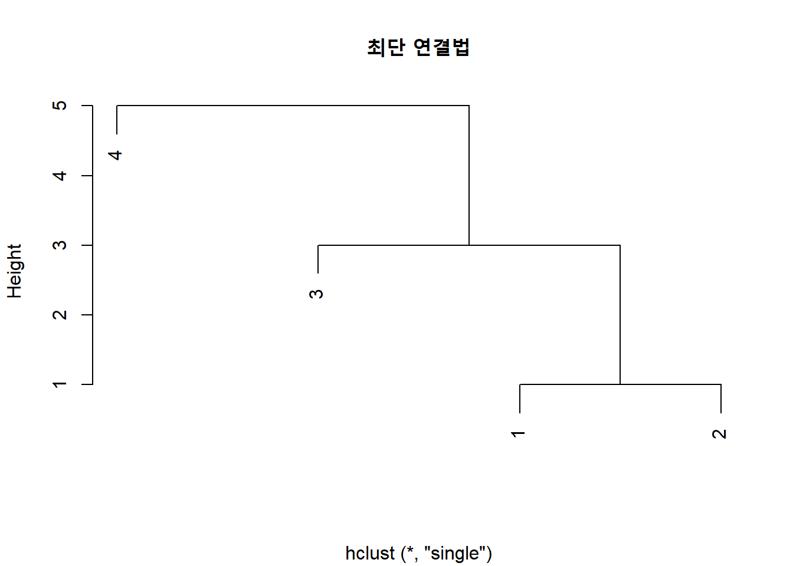
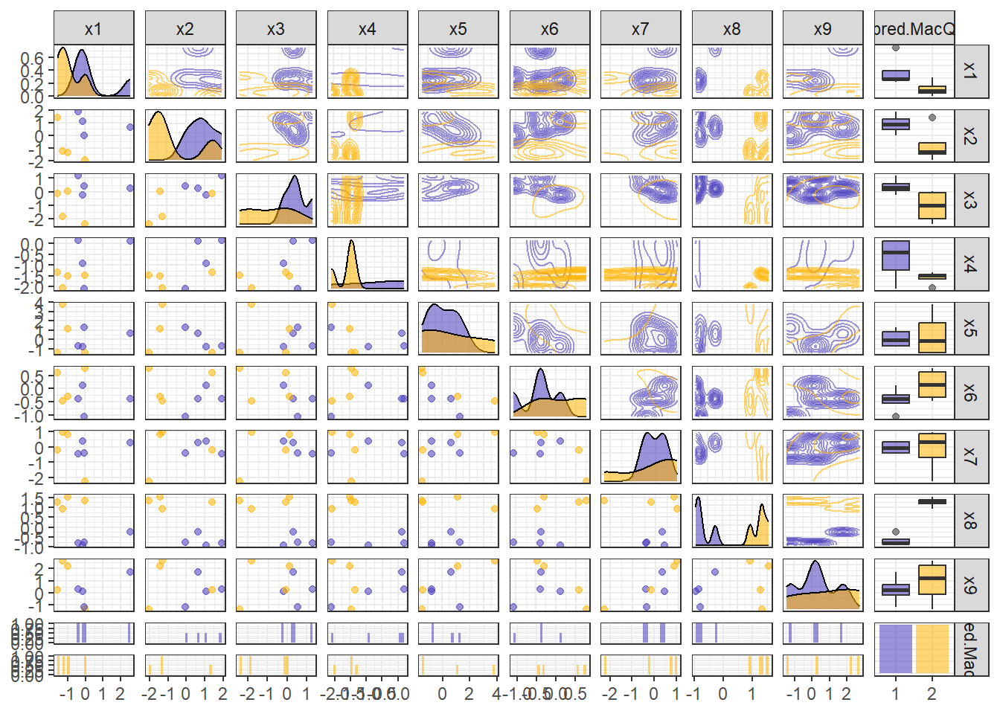

pacman::p_load("data.table",
"tidyverse",
"dplyr",
"caret",
"GGally", # For ggpairs
"factoextra", # For fviz_dend, fviz_nbclust
"NbClust") # For NbClust
protein <- fread(".../protein.csv") # 데이터 불러오기
protein %>%
as_tibble8 Cluster Analysis based on k-means
8.1 데이터 불러오기
# A tibble: 25 × 10
country x1 x2 x3 x4 x5 x6 x7 x8 x9
<chr> <dbl> <dbl> <dbl> <dbl> <dbl> <dbl> <dbl> <dbl> <dbl>
1 Albania 10.1 1.4 0.5 8.9 0.2 42.3 0.6 5.5 1.7
2 Austria 8.9 14 4.3 19.9 2.1 28 3.6 1.3 4.3
3 Belgium 13.5 9.3 4.1 17.5 4.5 26.6 5.7 2.1 4
4 Bulgaria 7.8 6 1.6 8.3 1.2 56.7 1.1 3.7 4.2
5 Czechoslovakia 9.7 11.4 2.8 12.5 2 34.3 5 1.1 4
6 Denmark 10.6 10.8 3.7 25 9.9 21.9 4.8 0.7 2.4
7 E Germany 8.4 11.6 3.7 11.1 5.4 24.6 6.5 0.8 3.6
8 Finland 9.5 4.9 2.7 33.7 5.8 26.3 5.1 1 1.4
9 France 18 9.9 3.3 19.5 5.7 28.1 4.8 2.4 6.5
10 Greece 10.2 3 2.8 17.6 5.9 41.7 2.2 7.8 6.5
# ℹ 15 more rows8.2 데이터 전처리 I
protein.df <- protein %>%
data.frame %>% # Data Frame 형태로 변환
select(-country) # 변수 "country" 제거
rownames(protein.df) <- protein$country # 행 이름 변경
protein.df %>%
head() # 처음 6개 case 확인 x1 x2 x3 x4 x5 x6 x7 x8 x9
Albania 10.1 1.4 0.5 8.9 0.2 42.3 0.6 5.5 1.7
Austria 8.9 14.0 4.3 19.9 2.1 28.0 3.6 1.3 4.3
Belgium 13.5 9.3 4.1 17.5 4.5 26.6 5.7 2.1 4.0
Bulgaria 7.8 6.0 1.6 8.3 1.2 56.7 1.1 3.7 4.2
Czechoslovakia 9.7 11.4 2.8 12.5 2.0 34.3 5.0 1.1 4.0
Denmark 10.6 10.8 3.7 25.0 9.9 21.9 4.8 0.7 2.48.3 데이터 탐색
ggpairs(protein.df,
upper = list(continuous = "density"),
lower = list(continuous = wrap("points", size = 0.5)),
diag = list(continuous = "densityDiag")) +
theme_bw()# 상관계수 그래프
ggcorr(protein.df, # 데이터
label = TRUE, # 라벨 명시 여부
label_round = 3, # 상관계수 소숫점 이하 자릿수
label_size = 3, # 상관계수 글자 크기
low = "steelblue", # 상관계수가 음수일 때 색깔
mid = "white", # 상관계수가 0에 가까울 때 색깔
high = "darkred") # 상관계수가 양수일 때 색깔8.4 데이터 분할
# Partition (Training Dataset : Test Dataset = 7:3)
set.seed(200)
ind <- sample(1:nrow(protein.df), 0.7*nrow(protein.df)) # Index를 이용하여 7:3로 분할
protein.trd <- protein.df[ind,] # Training Dataset
protein.ted <- protein.df[-ind,] # Test Dataset8.5 데이터 전처리 II
# Standardization
preProcValues <- preProcess(protein.trd,
method = c("center", "scale")) # Standardization 정의 -> Training Dataset에 대한 평균과 표준편차 계산
protein.trd <- predict(preProcValues, protein.trd) # Standardization for Training Dataset
protein.ted <- predict(preProcValues, protein.ted) # Standardization for Test Dataset
glimpse(protein.trd) # 데이터 구조 확인Rows: 17
Columns: 9
$ x1 <dbl> 0.18081182, -1.21348962, -0.19945221, -0.16776354, 1.22653789, 0.43432117, 0.97302854, 2.33564131, -0.70647091, -0.23114088, -1.78388566, -0.32620689, -0.99166894, -0.51633890, -0.1677635…
$ x2 <dbl> 0.8964725, -0.4696659, -0.9554040, -0.8946867, 0.6536035, 1.4125693, 0.6839621, -0.6518177, -0.5607418, -0.9857626, -0.8643281, -0.8339695, 0.7143207, 1.1393416, 1.7465142, 0.4410931, -1.…
$ x3 <dbl> 0.60866213, -1.46078912, -0.33199753, -0.33199753, 1.54932180, 0.98492600, 0.04426634, 1.54932180, -1.36672316, -0.89639332, -1.74298702, -0.14386560, -0.33199753, 0.60866213, 0.51459617,…
$ x4 <dbl> 0.923106753, -1.136667805, 0.671191879, 2.212318167, 1.041654929, 0.004358389, 0.745284489, 0.271091785, -1.551586421, -0.321649095, -1.373764157, -0.751386233, 0.078450999, -1.136667805,…
$ x5 <dbl> 2.1894978, -1.1166002, 2.1152035, 0.6664639, -0.6708342, -0.2250681, -0.6336870, 0.1092564, -1.0423058, -0.3736568, -1.2651889, -0.2250681, -0.3736568, 0.5178752, -0.5593927, 0.1835507, 0…
$ x6 <dbl> -0.8752919, 1.3478740, -0.7870074, -0.5221537, -0.7067487, -1.1401456, -0.5783347, -0.6826711, 1.9177108, 0.8663218, 1.8535038, 0.3205627, 0.2643816, -0.6585934, -0.8351626, -0.4980760, 0…
$ x7 <dbl> 0.28314770, -0.73972337, 0.16280993, 0.46365436, 1.12551212, 0.52382325, -0.92023003, 0.22297882, -1.94310111, 1.24584989, -0.79989226, -1.34141224, 0.94500546, 1.30601878, -0.07786562, 0…
$ x8 <dbl> -1.1132630, 1.2269834, -0.6553887, -0.9606382, -0.6553887, -0.7062636, -0.2483893, 0.2603599, 0.4129847, 0.2603599, 1.4304831, 0.7182342, -0.4518890, -1.0623881, -0.5536389, -0.4010141, 2…
$ x9 <dbl> -0.95800750, -0.69532803, -0.76099790, -1.61470619, -0.62965816, -0.03862933, 0.68373923, -0.36697868, 0.22405014, -0.62965816, -0.43264855, 1.86579687, 1.80012700, -0.16996907, -0.104299…glimpse(protein.ted) # 데이터 구조 확인Rows: 8
Columns: 9
$ x1 <dbl> 0.02236847, -0.35789556, -0.10438620, 2.52577332, -1.49868764, -1.21348962, -0.92829160, -0.04100887
$ x2 <dbl> -1.95723882, 1.86794873, 1.07862431, 0.62324484, 1.38221063, -1.25899030, -1.35006619, -0.01428641
$ x3 <dbl> -2.40144878, 1.17305793, -0.23793156, 0.23239827, -0.14386560, -1.83705299, 0.04426634, 0.42053020
$ x4 <dbl> -1.4626753, 0.1673621, -0.9292085, 0.1080880, -1.3441271, -2.0554162, -1.5071309, -2.0850532
$ x5 <dbl> -1.4137775, -0.7079813, -0.7451285, 0.6293167, -1.3766304, 3.7868261, 1.1122299, 1.2979658
$ x6 <dbl> 0.7619855, -0.3857139, 0.1199159, -0.3776880, 0.5854164, -0.4659726, -0.2894034, -1.0679128
$ x7 <dbl> -2.2439455, -0.4388789, 0.4034855, 0.2831477, -0.1982034, 0.9450055, 0.8246677, -0.3787101
$ x8 <dbl> 1.3287333, -0.8080135, -0.9097633, -0.2483893, 1.2778583, 0.9217339, 1.5322329, -0.7571385
$ x9 <dbl> -1.4176966, 0.2897200, 0.0927104, 1.7344571, 0.2240501, 2.6538353, 2.1941462, -1.22068708.6 계층적 군집분석
- 계층적 군집분석은 거리가 가까운 군집을 하나씩 묶어가면서 군집을 형성하는 방법이다.
- 예를 들어, \(n\)개의 case가 있을 때 거리가 가장 가까운 두 개의 case를 묶어서 하나의 군집을 형성하고, 나머지 \(n-2\)개의 case는 각각이 하나의 군집을 이루도록 한다.
- 그리고나서, \(n-1\)개의 군집 중에서 거리가 가장 가까운 두 개의 군집을 묶어 \(n-2\)개의 군집을 형성한다.
- 이와 같은 과정은 최종적으로 \(n\)개의 case를 모두 묶어 하나의 군집을 형성할 때까지 반복한다.
- 계층적 군집분석은 덴드로그램(Dendrogram)을 이용하여 시각적으로 군집 형성 과정을 볼 수 있으며, 이것은 전체 군집들 간의 구조적 관계를 살펴보는데 매우 유용하다.
- 계층적 군집분석은 case의 개수가 비교적 작을 때 유용하다.
- case의 개수가 많으면 거리행렬을 계산하는 데 매우 많은 시간과 컴퓨터 용량이 필요하므로 적용에 제약이 따른다.
- 계층적 군집분석은 군집 간의 case 이동이 불가능하다는 단점이 있다.
8.6.1 거리행렬 계산
- 계층적 군집분석을 수행하기 전에 case 간의 거리를 계산하여 거리행렬을 생성한다.
- 거리행렬을 생성하기 위해 함수
dist()를 이용하며, 거리를 계산하는 방법은 옵션method에 지정할 수 있다.- 함수
dist()의 자세한 옵션은 여기를 참고한다.
- 함수
protein.X.eucl <- dist(protein.trd,
method = "euclidean") # 유클리드 거리
protein.X.eucl Denmark Romania Norway Finland Ireland W Germany Switzerland UK Bulgaria USSR Yugoslavia Italy Poland E Germany Netherlands Belgium
Romania 5.899193
Norway 2.190572 5.017093
Finland 2.967850 5.245898 2.336933
Ireland 3.359817 5.698092 4.124494 3.546137
W Germany 2.878437 5.127560 3.800557 4.003049 1.923184
Switzerland 3.738040 4.469147 3.903220 3.935243 2.917500 2.356744
UK 3.867136 5.591679 3.905187 4.132260 2.420596 3.117714 3.060014
Bulgaria 6.313897 1.931986 5.500563 5.964271 6.225093 5.529229 4.441702 5.851565
USSR 4.477896 2.806990 3.501849 3.582533 4.008542 3.961498 3.884788 4.096414 3.822901
Yugoslavia 6.713206 1.004357 5.698797 5.962378 6.560893 5.996864 5.298535 6.426629 2.062393 3.407616
Italy 5.277250 3.439932 4.454559 5.342612 5.114655 4.328910 3.122747 4.448760 2.953685 3.772778 3.819090
Poland 4.399724 4.220409 4.275439 4.655450 4.049754 3.143036 3.160984 4.834137 4.493170 3.288055 4.702444 3.192257
E Germany 3.049396 4.874142 3.609905 4.382604 3.275421 1.990398 3.737112 4.163853 5.381543 3.551288 5.605003 4.525418 2.966305
Netherlands 3.104750 4.718412 3.958992 3.789881 2.469626 1.324503 2.037250 3.815009 5.147099 4.011981 5.573208 4.210302 2.959231 2.681627
Belgium 2.915357 4.886542 3.340291 3.805354 1.828405 1.484545 2.433729 2.074059 5.228214 3.266973 5.724063 3.895649 3.174653 2.239657 2.416333
Greece 5.917754 4.069820 4.853851 5.817338 5.983267 5.564533 4.319030 4.823118 4.018591 4.352319 4.324015 2.258867 4.579691 5.805825 5.463629 4.850338protein.X.manh <- dist(protein.trd,
method = "manhattan") # 맨해튼 거리
protein.X.manh Denmark Romania Norway Finland Ireland W Germany Switzerland UK Bulgaria USSR Yugoslavia Italy Poland E Germany Netherlands Belgium
Romania 16.044727
Norway 4.362516 12.653687
Finland 7.235608 13.911994 4.806928
Ireland 7.005266 15.065397 9.247118 9.468623
W Germany 6.311091 14.349831 8.813170 9.834368 5.275630
Switzerland 8.577085 12.171223 9.154543 10.313649 6.016994 6.543626
UK 9.593477 13.663230 8.600319 9.995946 6.070217 7.184453 8.227596
Bulgaria 17.753936 4.687965 14.180745 15.439051 16.643266 14.745643 11.680662 14.533589
USSR 12.013442 7.120222 7.891602 8.669654 9.812398 9.705856 10.574401 9.256640 8.515940
Yugoslavia 18.709646 2.664919 14.529282 15.787588 17.598976 16.489391 14.190445 15.438486 5.039583 8.864477
Italy 14.554763 8.544198 10.811381 12.069687 14.335626 11.546471 8.379349 11.152265 7.639620 7.664063 9.834813
Poland 10.924142 11.435210 10.141752 10.798369 9.205546 7.582684 7.326023 11.798756 11.876059 7.469926 13.574770 6.958702
E Germany 6.749900 12.877025 9.027131 9.346129 7.631657 5.235333 9.516872 10.027053 13.535516 8.989430 15.016585 11.487171 7.812245
Netherlands 6.093145 12.833723 7.316895 9.011894 5.947924 3.547303 4.999723 8.550044 13.360874 9.764597 14.973283 10.830351 7.624579 6.084633
Belgium 7.549654 13.744660 8.862655 9.455895 4.474243 3.617701 5.629898 5.334180 13.877793 8.498996 15.884220 10.678620 7.146631 5.539266 6.249788
Greece 15.381876 11.152876 11.714511 13.105170 17.020097 14.230942 11.063821 13.168087 11.386135 9.937048 11.975775 4.983861 10.346909 14.602128 13.958464 12.575491protein.X.canb <- dist(protein.trd,
method = "canberra") # 캔버라 거리
protein.X.canb Denmark Romania Norway Finland Ireland W Germany Switzerland UK Bulgaria USSR Yugoslavia Italy Poland E Germany Netherlands Belgium
Romania 8.158879
Norway 3.871710 6.733253
Finland 4.767715 7.096226 2.405164
Ireland 3.566184 7.298951 5.111712 5.554244
W Germany 4.438168 8.559232 6.636858 6.534643 4.077482
Switzerland 5.631496 7.384647 6.655474 7.136181 3.826983 5.915036
UK 5.431704 7.121411 5.091535 5.770405 4.848527 6.340807 6.905568
Bulgaria 9.000000 2.693889 7.429098 7.454773 8.216837 8.644828 7.107421 7.301777
USSR 7.836442 4.248394 5.411981 5.563226 6.335265 7.540568 8.258134 6.163877 4.722732
Yugoslavia 8.377778 1.237536 6.804002 7.102698 7.492452 8.534013 7.402525 6.914326 2.909789 4.561988
Italy 9.000000 4.711358 6.704348 6.751228 8.497561 8.000000 7.125692 7.590486 4.318125 4.553765 4.836478
Poland 6.917891 6.900790 6.345653 6.343996 5.459791 5.977593 5.829424 8.169304 6.785597 5.751088 7.259761 5.262433
E Germany 4.243672 7.010160 5.788280 5.086371 4.628132 4.869345 6.800052 6.180657 7.309833 6.538880 7.081395 7.429727 6.108030
Netherlands 4.715536 7.638203 4.969986 5.904652 4.136367 4.567917 4.788712 6.592700 7.840648 7.073731 7.648998 7.637213 6.225068 4.476133
Belgium 5.373320 8.715789 6.976183 6.282932 4.039578 4.848567 5.261781 5.566840 8.198201 7.464957 8.758929 8.504583 6.266166 4.686976 6.323095
Greece 8.053278 5.888016 6.878480 6.435935 8.915575 8.778626 7.493229 7.883260 6.100786 5.985242 5.742592 4.140892 6.643087 7.887254 8.885417 7.431991protein.X.mink <- dist(protein.trd,
method = "minkowski") # 민코우스키 거리
protein.X.mink Denmark Romania Norway Finland Ireland W Germany Switzerland UK Bulgaria USSR Yugoslavia Italy Poland E Germany Netherlands Belgium
Romania 5.899193
Norway 2.190572 5.017093
Finland 2.967850 5.245898 2.336933
Ireland 3.359817 5.698092 4.124494 3.546137
W Germany 2.878437 5.127560 3.800557 4.003049 1.923184
Switzerland 3.738040 4.469147 3.903220 3.935243 2.917500 2.356744
UK 3.867136 5.591679 3.905187 4.132260 2.420596 3.117714 3.060014
Bulgaria 6.313897 1.931986 5.500563 5.964271 6.225093 5.529229 4.441702 5.851565
USSR 4.477896 2.806990 3.501849 3.582533 4.008542 3.961498 3.884788 4.096414 3.822901
Yugoslavia 6.713206 1.004357 5.698797 5.962378 6.560893 5.996864 5.298535 6.426629 2.062393 3.407616
Italy 5.277250 3.439932 4.454559 5.342612 5.114655 4.328910 3.122747 4.448760 2.953685 3.772778 3.819090
Poland 4.399724 4.220409 4.275439 4.655450 4.049754 3.143036 3.160984 4.834137 4.493170 3.288055 4.702444 3.192257
E Germany 3.049396 4.874142 3.609905 4.382604 3.275421 1.990398 3.737112 4.163853 5.381543 3.551288 5.605003 4.525418 2.966305
Netherlands 3.104750 4.718412 3.958992 3.789881 2.469626 1.324503 2.037250 3.815009 5.147099 4.011981 5.573208 4.210302 2.959231 2.681627
Belgium 2.915357 4.886542 3.340291 3.805354 1.828405 1.484545 2.433729 2.074059 5.228214 3.266973 5.724063 3.895649 3.174653 2.239657 2.416333
Greece 5.917754 4.069820 4.853851 5.817338 5.983267 5.564533 4.319030 4.823118 4.018591 4.352319 4.324015 2.258867 4.579691 5.805825 5.463629 4.850338Caution! 모든 거리행렬을 이용하여 분석을 수행하면 시간이 오래 걸리기 때문에 본 예제에서는 유클리드 거리에 기반한 거리행렬만 이용한다.
8.6.2 계층적 군집분석
- 계층적 군집분석은 함수
hclust()를 이용하여 수행할 수 있으며, 옵션method에 군집 간 거리를 정의하는 방법을 지정할 수 있다."single": 최단 연결법- 두 군집에 속한 case들의 최단 거리를 군집 간 거리로 정의
"complete": 최장 연결법- 두 군집에 속한 case들의 최장 거리를 군집 간 거리로 정의
"average": 평균 연결법- 두 군집에 속한 모든 case 간의 거리 평균을 군집 간 거리로 정의
"ward.D": Ward의 방법- 군집 내 제곱합과 군집 간 제곱합을 고려
- 군집 내 제곱합과 군집 간 제곱합을 고려
"mcquitty": McQuitty의 평균 연결법"centroid": 중심 연결법"median": 중위수 연결법
Caution! 옵션 method에 지정한 방법에 따라 군집 형성의 결과가 다르다.
protein.X.sing <- hclust(protein.X.eucl, # 유클리드 거리에 기반한 거리행렬
method = "single") # 최단 연결법
protein.X.sing
Call:
hclust(d = protein.X.eucl, method = "single")
Cluster method : single
Distance : euclidean
Number of objects: 17 protein.X.comp <- hclust(protein.X.eucl, # 유클리드 거리에 기반한 거리행렬
method = "complete") # 최장 연결법
protein.X.comp
Call:
hclust(d = protein.X.eucl, method = "complete")
Cluster method : complete
Distance : euclidean
Number of objects: 17 protein.X.aver <- hclust(protein.X.eucl, # 유클리드 거리에 기반한 거리행렬
method = "average") # 평균 연결법
protein.X.aver
Call:
hclust(d = protein.X.eucl, method = "average")
Cluster method : average
Distance : euclidean
Number of objects: 17 protein.X.ward <- hclust(protein.X.eucl, # 유클리드 거리에 기반한 거리행렬
method = "ward.D") # Ward 방법
protein.X.ward
Call:
hclust(d = protein.X.eucl, method = "ward.D")
Cluster method : ward.D
Distance : euclidean
Number of objects: 17 Caution! 함수 cutree()는 case별 군집 번호를 생성하는 함수이다. 옵션 k에 형성하고자 하는 군집 개수를 입력하면 계층적 군집분석의 결과를 이용하여 각 case의 군집 번호를 출력해준다.
# Training Dataset의 case별 군집 번호 생성
hcluster <- cutree(protein.X.ward, # Ward 방법을 이용한 계층적 군집분석
k = 3) # 형성하고자 하는 군집 개수
hcluster Denmark Romania Norway Finland Ireland W Germany Switzerland UK Bulgaria USSR Yugoslavia Italy Poland E Germany Netherlands Belgium
1 2 1 1 3 3 3 3 2 3 2 2 3 3 3 3
Greece
2 # Training Dataset과 군집 번호 결합
protein.X.hclust <- data.frame(protein.trd, hcluster)
protein.X.hclust x1 x2 x3 x4 x5 x6 x7 x8 x9 hcluster
Denmark 0.18081182 0.8964725 0.60866213 0.923106753 2.1894978 -0.8752919 0.28314770 -1.1132630 -0.95800750 1
Romania -1.21348962 -0.4696659 -1.46078912 -1.136667805 -1.1166002 1.3478740 -0.73972337 1.2269834 -0.69532803 2
Norway -0.19945221 -0.9554040 -0.33199753 0.671191879 2.1152035 -0.7870074 0.16280993 -0.6553887 -0.76099790 1
Finland -0.16776354 -0.8946867 -0.33199753 2.212318167 0.6664639 -0.5221537 0.46365436 -0.9606382 -1.61470619 1
Ireland 1.22653789 0.6536035 1.54932180 1.041654929 -0.6708342 -0.7067487 1.12551212 -0.6553887 -0.62965816 3
W Germany 0.43432117 1.4125693 0.98492600 0.004358389 -0.2250681 -1.1401456 0.52382325 -0.7062636 -0.03862933 3
Switzerland 0.97302854 0.6839621 0.04426634 0.745284489 -0.6336870 -0.5783347 -0.92023003 -0.2483893 0.68373923 3
UK 2.33564131 -0.6518177 1.54932180 0.271091785 0.1092564 -0.6826711 0.22297882 0.2603599 -0.36697868 3
Bulgaria -0.70647091 -0.5607418 -1.36672316 -1.551586421 -1.0423058 1.9177108 -1.94310111 0.4129847 0.22405014 2
USSR -0.23114088 -0.9857626 -0.89639332 -0.321649095 -0.3736568 0.8663218 1.24584989 0.2603599 -0.62965816 3
Yugoslavia -1.78388566 -0.8643281 -1.74298702 -1.373764157 -1.2651889 1.8535038 -0.79989226 1.4304831 -0.43264855 2
Italy -0.32620689 -0.8339695 -0.14386560 -0.751386233 -0.2250681 0.3205627 -1.34141224 0.7182342 1.86579687 2
Poland -0.99166894 0.7143207 -0.33199753 0.078450999 -0.3736568 0.2643816 0.94500546 -0.4518890 1.80012700 3
E Germany -0.51633890 1.1393416 0.60866213 -1.136667805 0.5178752 -0.6585934 1.30601878 -1.0623881 -0.16996907 3
Netherlands -0.16776354 1.7465142 0.51459617 0.686010401 -0.5593927 -0.8351626 -0.07786562 -0.5536389 -0.10429920 3
Belgium 1.09978322 0.4410931 0.98492600 -0.188282397 0.1835507 -0.4980760 0.82466768 -0.4010141 0.09271040 3
Greece 0.05405714 -1.4715007 -0.23793156 -0.173463875 0.7036111 0.7138303 -1.28124336 2.4988565 1.73445713 28.6.3 덴드로그램
- 계층적 군집분석의 장점은 덴드로그램을 쉽게 얻을 수 있다는 것이며, 덴드로그램을 통해 case의 군집 형성 과정을 한 눈에 살펴볼 수 있다.
# 최단 연결법을 이용한 계층적 군집분석의 덴드로그램
plot(protein.X.sing,
main = "최단 연결법", # 제목
xlab = "") # x축 라벨 이름
# 덴드로그램에 군집 구분 상자 추가
rect.hclust(protein.X.sing,
k = 3, # 형성하고자 하는 군집 개수
border = "red") # 상자 색깔Result! 덴드로그램을 살펴보면, 가장 아래쪽에 있는(=Height가 가장 짧은=군집 간 거리가 가장 짧은) “Romania”와 “Yugoslavia”가 제일 처음으로 묶여 군집을 형성하였다. 그리고, Height가 두 번째로 짧은 “W Germany”와 “Netherlands”가 묶여 군집을 형성하였다. 세 번째로는 군집 (“W Germany”, “Netherlands”)과 “Belgium”이 묶여 군집을 형성했다는 것을 알 수 있다.
# 최장 연결법을 이용한 계층적 군집분석의 덴드로그램
plot(protein.X.comp,
main = "최장 연결법", # 제목
xlab = "") # x축 라벨 이름
# 덴드로그램에 군집 구분 상자 추가
rect.hclust(protein.X.comp,
k = 3, # 형성하고자 하는 군집 개수
border = "red") # 상자 색깔# 평균 연결법을 이용한 계층적 군집분석의 덴드로그램
plot(protein.X.aver,
main = "평균 연결법", # 제목
xlab = "") # x축 라벨 이름
# 덴드로그램에 군집 구분 상자 추가
rect.hclust(protein.X.aver,
k = 3, # 형성하고자 하는 군집 개수
border = "red") # 상자 색깔# Ward 방법을 이용한 계층적 군집분석의 덴드로그램
plot(protein.X.ward,
main = "Ward", # 제목
xlab = "") # x축 라벨 이름
# 덴드로그램에 군집 구분 상자 추가
rect.hclust(protein.X.ward,
k = 3, # 형성하고자 하는 군집 개수
border = "red") # 상자 색깔Caution! Package "factoextra"에서 제공하는 함수 fviz_dend()를 이용하면 덴드로그램의 시각화 옵션을 다양하게 변경할 수 있다.
protein.X.ward %>%
fviz_dend(cex = 1, # 라벨 크기
k = 3, # 형성하고자 하는 군집 개수
palette = "jco") # 군집 색깔protein.X.ward %>%
fviz_dend(cex = 1, # 라벨 크기
k = 3, # 형성하고자 하는 군집 개수
palette = "jco", # 군집 색깔
# 덴드로그램에 군집 구분 상자 추가
rect = TRUE, # 상자 표시 여부
rect_border = "jco", # 상자 색깔
rect_fill = TRUE) # 상자 색깔 채우기 여부 / FALSE : 선만 표시protein.X.ward %>%
fviz_dend(cex = 1, # 라벨 크기
k = 3, # 형성하고자 하는 군집 개수
palette = "jco", # 군집 색깔
# 덴드로그램에 군집 구분 상자 추가
rect = TRUE, # 상자 표시 여부
rect_border = "jco", # 상자 색깔
rect_fill = TRUE,
horiz = TRUE) # 가로로 회전8.6.4 거리행렬만 주어진 경우
- Dataset의 예측 변수 값은 주어지지 않았으며, 거리행렬만 알고 있는 경우 계층적 군집분석을 수행하는 절차는 다음과 같다.
- 주어진 거리행렬을 함수
as.dist()를 이용하여 “dist” 객체로 변환 - 함수
hclust()를 이용하여 계층적 군집분석 수행
- 주어진 거리행렬을 함수
# 거리행렬
exam71 <- c(0, 1, 7, 9, 1, 0, 3, 6, 7, 3, 0, 5, 9, 6, 5, 0)
exam71.matrix <- matrix(exam71, nrow = 4)
exam71.matrix [,1] [,2] [,3] [,4]
[1,] 0 1 7 9
[2,] 1 0 3 6
[3,] 7 3 0 5
[4,] 9 6 5 0exam71.dist <- as.dist(exam71.matrix) # "dist" 객체로 변환
exam71.dist 1 2 3
2 1
3 7 3
4 9 6 5exam71.sing <- hclust(exam71.dist,
method = "single") # 최단 연결법
# 덴드로그램 Ver.1
plot(exam71.sing,
main = "최단 연결법", # 제목
xlab = "") # x축 라벨 이름
# 덴드로그램 Ver.2
exam71.sing %>%
fviz_dend(cex = 1, # 라벨 크기
k = 3, # 형성하고자 하는 군집 개수
palette = "jco", # 군집 색깔
# 덴드로그램에 군집 구분 상자 추가
rect = TRUE, # 상자 표시 여부
rect_border = "jco", # 상자 색깔
rect_fill = TRUE) # 상자 색깔 채우기 여부 / FALSE : 선만 표시exam71.comp <- hclust(exam71.dist,
method = "complete") # 최장 연결법
# 덴드로그램 Ver.1
plot(exam71.comp,
main = "최장 연결법", # 제목
xlab = "") # x축 라벨 이름# 덴드로그램 Ver.2
exam71.comp %>%
fviz_dend(cex = 1, # 라벨 크기
k = 3, # 형성하고자 하는 군집 개수
palette = "jco", # 군집 색깔
# 덴드로그램에 군집 구분 상자 추가
rect = TRUE, # 상자 표시 여부
rect_border = "jco", # 상자 색깔
rect_fill = TRUE) # 상자 색깔 채우기 여부 / FALSE : 선만 표시8.7 군집 개수 결정
- 군집 개수를 결정하는 것은 쉽지 않은 문제이며, 여러 가지 지표들을 이용하여 적절한 군집 개수를 찾는 것이 바람직하다.
- 계층적 군집분석은 자료의 계층적 구조에 주된 관심이 있으며, 덴드로그램을 통해 적절한 군집 개수를 결정할 수 있다.
- 예를 들어, 군집 형성 과정에서 거리의 측도 또는 어떤 지표의 값이 상대적으로 큰 변화를 보일 경우 이를 검토할 필요가 있다.
- 특히, Ward 방법을 이용하는 경우 군집의 개수에 따른 Error Sum of Squares (ESS)의 증분을 검토하여 급격한 변화가 일어나는 위치에 대응하는 군집 개수를 최적의 군집 개수로 결정하기도 한다.
- 자료의 모분포에 대한 적절한 가정 하에서 통계적 가설검정를 통해 군집의 개수를 알아보는 방법들도 있으나, 이들도 일반적으로 만족할 만한 타당성을 제공하지 않는다.
8.7.1 “fviz_nbclust”
- Package
"factoextra"에서 제공하는 함수fviz_nbclust()를 이용하여 군집 개수에 따른 특정 통계량의 변화를 알 수 있다.- 옵션
method에는 다음과 같은 통계량을 지정할 수 있다."wss"(군집 내 제곱합, Within-Cluster Sum of Square) : 군집 내 변동의 합계를 의미하며, 해당 값이 작을수록 군집화가 잘 되었음을 나타낸다. 군집의 개수가 증가함에 따라 wss가 작아지게 되는데,wss가 급격히 감소하다가 감소량이 완만하게 되는 지점이 최적의 군집 개수에 대한 후보가 될 수 있다."silhouette"(실루엣 계수, Silhouette Coefficient) : 각 case가 해당 군집에 얼마나 잘 위치하고 있는 지를 측정하는 계수이며, 해당 값이 클 때 군집화가 잘 되었음을 나타낸다. 일반적으로평균 실루엣 계수가 가장 큰 지점의 군집 개수를 최적의 군집 개수로 선택한다.
- 옵션
- 함수
fviz_nbclust()의 자세한 옵션은 여기를 참고한다.
# Method = "wss"
fviz_nbclust(protein.trd,
kmeans, # 군집분석에 사용할 함수
method = "wss", # 탐색할 통계량
k.max = 10) # 탐색할 최대 군집 개수Result! 군집의 개수가 2-5개일 때, 통계량 wss의 감소량이 완만하게 되기 때문에, 최적의 군집 개수를 2-5개로 선택할 수 있다.
# Method = "silhouette"
fviz_nbclust(protein.trd,
kmeans, # 군집분석에 사용할 함수
method = "silhouette", # 탐색할 통계량
k.max = 10) # 탐색할 최대 군집 개수Result! 군집의 개수가 2개일 때, 평균 실루엣 계수가 가장 높으므로 최적의 군집 개수를 2개로 선택할 수 있다.
8.7.2 “NbClust”
- Package
"NbClust"에서 제공하는 함수NbClust()는 앞에서 설명한 통계량("wss","silhouette")을 포함하여 30개의 통계량에 의해 군집의 개수를 결정할 수 있다. - 함수
NbClust()의 자세한 옵션은 여기를 참고한다.
nc <- NbClust(data = protein.trd,
distance = "euclidean", # 거리를 계산할 측도
min.nc = 2, # 탐색할 최소 군집 개수
max.nc = 8, # 탐색할 최대 군집 개수
method = "kmeans") # 군집분석 방법*** : The Hubert index is a graphical method of determining the number of clusters.
In the plot of Hubert index, we seek a significant knee that corresponds to a
significant increase of the value of the measure i.e the significant peak in Hubert
index second differences plot.
*** : The D index is a graphical method of determining the number of clusters.
In the plot of D index, we seek a significant knee (the significant peak in Dindex
second differences plot) that corresponds to a significant increase of the value of
the measure.
*******************************************************************
* Among all indices:
* 10 proposed 2 as the best number of clusters
* 5 proposed 3 as the best number of clusters
* 3 proposed 4 as the best number of clusters
* 3 proposed 6 as the best number of clusters
* 3 proposed 8 as the best number of clusters
***** Conclusion *****
* According to the majority rule, the best number of clusters is 2
******************************************************************* nc$All.index
KL CH Hartigan CCC Scott Marriot TrCovW TraceW Friedman Rubin Cindex DB Silhouette Duda Pseudot2 Beale Ratkowsky Ball Ptbiserial Frey McClain Dunn Hubert
2 4.9411 11.1225 3.2331 -0.1756 36.3456 1.421678e+07 146.0938 82.6873 30.9509 1.7415 0.5736 1.1046 0.3431 1.1970 -2.1394 -0.8894 0.4422 41.3436 0.7062 1.4601 0.6080 0.6460 0.0126
3 0.6956 7.8181 3.7522 -1.0319 96.3353 9.385189e+05 114.7558 68.0250 96.6219 2.1169 0.5519 0.8772 0.3295 3.1874 -4.8039 -2.7473 0.4135 22.6750 0.6885 1.5743 0.7685 0.6110 0.0128
4 3.6704 7.2983 1.4045 -1.3187 137.9082 1.446331e+05 67.7159 53.6468 106.0892 2.6842 0.5500 1.1372 0.2421 3.2865 -1.3914 -2.0889 0.3930 13.4117 0.5273 -0.1000 2.1838 0.3411 0.0122
5 0.5133 5.9227 1.9786 -2.5078 185.0890 1.408551e+04 62.3318 48.4159 173.9386 2.9742 0.5037 1.0525 0.2789 0.8998 0.5569 0.5351 0.3619 9.6832 0.5768 36.1590 2.2269 0.4603 0.0133
6 0.3615 5.4222 5.9440 -3.3386 234.5005 1.108751e+03 45.6726 41.5629 402.5724 3.4646 0.5027 1.0461 0.2133 0.2757 7.8820 11.8328 0.3428 6.9272 0.4746 0.0607 3.3942 0.3433 0.0131
7 2.3162 7.2280 3.0544 -1.8743 284.9642 7.754320e+01 20.5620 26.9825 602.5454 5.3368 0.5381 0.9193 0.2820 1.6856 -0.4068 0.0000 0.3403 3.8546 0.5152 0.1602 4.2023 0.4515 0.0153
8 2.8851 7.6717 1.1819 -1.6783 337.0101 4.741600e+00 13.4502 20.6693 749.7846 6.9669 0.5279 0.7813 0.3445 7.0565 0.0000 0.0000 0.3270 2.5837 0.5034 1.1889 4.9530 0.5005 0.0153
SDindex Dindex SDbw
2 1.0165 2.1448 0.6546
3 0.8783 1.8881 0.4867
4 1.0702 1.7046 0.4059
5 1.0276 1.5839 0.3589
6 1.1107 1.4546 0.3400
7 1.0204 1.1810 0.2757
8 0.9360 1.0175 0.1937
$All.CriticalValues
CritValue_Duda CritValue_PseudoT2 Fvalue_Beale
2 0.4954 13.2414 1.0000
3 0.2098 26.3677 1.0000
4 0.0985 18.3088 1.0000
5 0.3418 9.6280 0.8391
6 0.2857 7.4990 0.0000
7 -0.0882 -12.3333 NaN
8 -0.0882 0.0000 NaN
$Best.nc
KL CH Hartigan CCC Scott Marriot TrCovW TraceW Friedman Rubin Cindex DB Silhouette Duda PseudoT2 Beale Ratkowsky Ball PtBiserial Frey McClain Dunn
Number_clusters 2.0000 2.0000 6.0000 2.0000 3.0000 3 4.0000 4.0000 6.0000 4.0000 6.0000 8.0000 8.0000 2.000 2.0000 2.0000 2.0000 3.0000 2.0000 3.0000 2.000 2.000
Value_Index 4.9411 11.1225 3.9654 -0.1756 59.9897 12484378 47.0399 9.1472 228.6338 -0.2773 0.5027 0.7813 0.3445 1.197 -2.1394 -0.8894 0.4422 18.6686 0.7062 1.5743 0.608 0.646
Hubert SDindex Dindex SDbw
Number_clusters 0 3.0000 0 8.0000
Value_Index 0 0.8783 0 0.1937
$Best.partition
Denmark Romania Norway Finland Ireland W Germany Switzerland UK Bulgaria USSR Yugoslavia Italy Poland E Germany Netherlands Belgium
1 2 1 1 1 1 1 1 2 2 2 2 1 1 1 1
Greece
2 Caution! “$All.index”에서는 군집 개수에 따른 각 통계량의 측정값을 볼 수 있으며, “$Best.nc”에서는 각 통계량에 대해 최적의 군집 개수를 보여준다. “$Best.partition”에서는 최적의 군집 개수에 대한 case별 군집 번호를 보여준다.
Result! “$Best.nc”를 살펴보면, 10개의 통계량에서 최적의 군집 개수로 “2”개를 추천하고 있으며, 5개의 통계량에서 최적의 군집 개수를 “3”개로 추천하고 있다. 대다수의 통계량이 최적의 군집 개수로 “2”개를 추천하고 있으며, 이를 기반으로 나눠진 각 case의 군집 번호는 “$Best.partition”에서 볼 수 있다.
# 여러 통계량의 최적의 군집 개수에 대한 막대 그래프
barplot(table(nc$Best.n[1,]), # 군집 개수에 대한 도수분포표
xlab = "Number of Clusters",
ylab = "Number of Criteria")Caution! 옵션 index에 특정 통계량의 이름을 지정하면, 해당 통계량에 대한 결과를 자세히 볼 수 있다.
# Cubic Clustering Criterion 통계량에 대한 최적의 군집 개수
NbClust(data = protein.trd,
distance = "euclidean", # 거리를 계산할 측도
min.nc = 2, # 탐색할 최소 군집 개수
max.nc = 8, # 탐색할 최대 군집 개수
method = "kmeans", # 군집분석 방법
index = "ccc") # Cubic Clustering Criterion 통계량$All.index
2 3 4 5 6 7 8
-0.1756 -1.0319 -1.3187 -2.5078 -3.3386 -1.8743 -1.6783
$Best.nc
Number_clusters Value_Index
2.0000 -0.1756
$Best.partition
Denmark Romania Norway Finland Ireland W Germany Switzerland UK Bulgaria USSR Yugoslavia Italy Poland E Germany Netherlands Belgium
1 2 1 1 1 1 1 1 2 2 2 2 1 1 1 1
Greece
2 8.8 비계층적 군집분석(k-means)
k-means의 장점
- 안정적인 결과를 찾을 때까지 각 반복마다 군집 간에 case 이동이 가능하다.
- 예측 변수가 많은 경우, 다른 군집분석 알고리듬에 비해 수행하는 시간이 적게 걸린다.
- 알고리듬 구현이 매우 간단하다.
k-means의 단점
- 범주형 예측 변수는 거리 계산을 할 수 없으므로 분석에 사용할 수 없다.
- 군집의 개수를 미리 결정해야 한다.
- 예측 변수들의 scale을 동일하게 설정해야 한다.
- 이상치에 민감하다.
- 초기 중심값 선택에 매우 민감하다.
- 비구형 군집에는 잘 작동하지 않는다.
k-means를 수행하기 위해 사용할 알고리듬
Caution! 군집 개수 결정에서 다양한 통계량을 이용하여 결정된 최적의 군집 개수 “2”개를 기반으로 k-means를 수행한다.
# k-means에서 함수 predict()를 사용하기 위해 Package 설치
pacman::p_load("twidlr") # For predict of "kmeans"
# devtools::install_github("drsimonj/twidlr") # Install Package "twidlr"8.8.1 Lloyd
8.8.1.1 모형 훈련
set.seed(200)
protein.Lloyd <- kmeans(protein.trd,
centers = 2, # 형성하고자 하는 군집 개수
nstart = 10, # 수행 횟수
iter.max = 100, # 최대 반복 수
algorithm = "Lloyd")
protein.LloydK-means clustering with 2 clusters of sizes 11, 6
Cluster means:
x1 x2 x3 x4 x5 x6 x7 x8 x9
1 0.3824670 0.4714517 0.5316991 0.4825925 0.3017463 -0.638164 0.4417748 -0.5952638 -0.1878790
2 -0.7011895 -0.8643281 -0.9747816 -0.8847529 -0.5532015 1.169967 -0.8099204 1.0913170 0.3444449
Clustering vector:
Denmark Romania Norway Finland Ireland W Germany Switzerland UK Bulgaria USSR Yugoslavia Italy Poland E Germany Netherlands Belgium
1 2 1 1 1 1 1 1 2 2 2 2 1 1 1 1
Greece
2
Within cluster sum of squares by cluster:
[1] 54.69862 27.98864
(between_SS / total_SS = 42.6 %)
Available components:
[1] "cluster" "centers" "totss" "withinss" "tot.withinss" "betweenss" "size" "iter" "ifault" Caution! k-means는 초기 중심값을 랜덤하게 선택하기 때문에 이 과정에서 다양한 결과가 나타날 수 있다. 그래서 nstart를 이용하여 수행 횟수를 늘려 최대한 다양한 초기 중심값에 대해 k-means를 수행하고 최적의 결과를 찾을 수 있다.
Result! 각 군집에 속한 case 수는 11, 6이며, “Within cluster sum of squares by cluster”를 살펴보면 42.6%의 변동이 2개의 군집으로 설명되고 있다.
8.8.1.2 예측
# Test Dataset에 대한 군집 번호 예측
pred.Lloyd <- predict(protein.Lloyd,
protein.ted)
pred.Lloyd %>%
as_tibble# A tibble: 8 × 1
value
<int>
1 2
2 1
3 1
4 1
5 2
6 2
7 2
8 1# Test Dataset과 예측한 군집 번호 결합
pred.protein.ted <- data.frame(protein.ted, pred.Lloyd) %>%
mutate(pred.Lloyd = factor(pred.Lloyd)) # 군집 번호를 범주형으로 변환
pred.protein.ted %>%
as_tibble# A tibble: 8 × 10
x1 x2 x3 x4 x5 x6 x7 x8 x9 pred.Lloyd
<dbl> <dbl> <dbl> <dbl> <dbl> <dbl> <dbl> <dbl> <dbl> <fct>
1 0.0224 -1.96 -2.40 -1.46 -1.41 0.762 -2.24 1.33 -1.42 2
2 -0.358 1.87 1.17 0.167 -0.708 -0.386 -0.439 -0.808 0.290 1
3 -0.104 1.08 -0.238 -0.929 -0.745 0.120 0.403 -0.910 0.0927 1
4 2.53 0.623 0.232 0.108 0.629 -0.378 0.283 -0.248 1.73 1
5 -1.50 1.38 -0.144 -1.34 -1.38 0.585 -0.198 1.28 0.224 2
6 -1.21 -1.26 -1.84 -2.06 3.79 -0.466 0.945 0.922 2.65 2
7 -0.928 -1.35 0.0443 -1.51 1.11 -0.289 0.825 1.53 2.19 2
8 -0.0410 -0.0143 0.421 -2.09 1.30 -1.07 -0.379 -0.757 -1.22 1 ggpairs(pred.protein.ted,
aes(colour = pred.Lloyd, alpha = 0.8), # 군집에 따라 색깔을 다르게 표현
upper = list(continuous = "density")) +
scale_colour_manual(values = c("purple","cyan4")) + # 특정 색깔 지정
scale_fill_manual(values = c("purple","cyan4")) + # 특정 색깔 지정
theme_bw()8.8.2 MacQueen
8.8.2.1 모형 훈련
set.seed(200)
protein.MacQ <- kmeans(protein.trd,
centers = 2, # 형성하고자 하는 군집 개수
nstart = 10, # 수행 횟수
iter.max = 100, # 최대 반복 수
algorithm = "MacQueen")
protein.MacQK-means clustering with 2 clusters of sizes 11, 6
Cluster means:
x1 x2 x3 x4 x5 x6 x7 x8 x9
1 0.3824670 0.4714517 0.5316991 0.4825925 0.3017463 -0.638164 0.4417748 -0.5952638 -0.1878790
2 -0.7011895 -0.8643281 -0.9747816 -0.8847529 -0.5532015 1.169967 -0.8099204 1.0913170 0.3444449
Clustering vector:
Denmark Romania Norway Finland Ireland W Germany Switzerland UK Bulgaria USSR Yugoslavia Italy Poland E Germany Netherlands Belgium
1 2 1 1 1 1 1 1 2 2 2 2 1 1 1 1
Greece
2
Within cluster sum of squares by cluster:
[1] 54.69862 27.98864
(between_SS / total_SS = 42.6 %)
Available components:
[1] "cluster" "centers" "totss" "withinss" "tot.withinss" "betweenss" "size" "iter" "ifault" Result! 각 군집에 속한 case 수는 11, 6이며, “Within cluster sum of squares by cluster”를 살펴보면 42.6%의 변동이 2개의 군집으로 설명되고 있다.
8.8.2.2 예측
# Test Dataset에 대한 군집 번호 예측
pred.MacQ <- predict(protein.MacQ,
protein.ted)
pred.MacQ %>%
as_tibble# A tibble: 8 × 1
value
<int>
1 2
2 1
3 1
4 1
5 2
6 2
7 2
8 1# Test Dataset과 예측한 군집 번호 결합
pred.protein.ted <- data.frame(protein.ted, pred.MacQ) %>%
mutate(pred.MacQ = factor(pred.MacQ)) # 군집 번호를 범주형으로 변환
pred.protein.ted %>%
as_tibble# A tibble: 8 × 10
x1 x2 x3 x4 x5 x6 x7 x8 x9 pred.MacQ
<dbl> <dbl> <dbl> <dbl> <dbl> <dbl> <dbl> <dbl> <dbl> <fct>
1 0.0224 -1.96 -2.40 -1.46 -1.41 0.762 -2.24 1.33 -1.42 2
2 -0.358 1.87 1.17 0.167 -0.708 -0.386 -0.439 -0.808 0.290 1
3 -0.104 1.08 -0.238 -0.929 -0.745 0.120 0.403 -0.910 0.0927 1
4 2.53 0.623 0.232 0.108 0.629 -0.378 0.283 -0.248 1.73 1
5 -1.50 1.38 -0.144 -1.34 -1.38 0.585 -0.198 1.28 0.224 2
6 -1.21 -1.26 -1.84 -2.06 3.79 -0.466 0.945 0.922 2.65 2
7 -0.928 -1.35 0.0443 -1.51 1.11 -0.289 0.825 1.53 2.19 2
8 -0.0410 -0.0143 0.421 -2.09 1.30 -1.07 -0.379 -0.757 -1.22 1 ggpairs(pred.protein.ted,
aes(colour = pred.MacQ, alpha = 0.8), # 군집에 따라 색깔을 다르게 표현
upper = list(continuous = "density")) +
scale_colour_manual(values = c("#483DBB","#FFB400")) + # 특정 색깔 지정
scale_fill_manual(values = c("#483DBB","#FFB400")) + # 특정 색깔 지정
theme_bw()
8.8.3 Hartigan-Wong
8.8.3.1 모형 훈련
set.seed(200)
protein.HW <- kmeans(protein.trd,
centers = 2, # 형성하고자 하는 군집 개수
nstart = 10, # 수행 횟수
iter.max = 100, # 최대 반복 수
algorithm = "Hartigan-Wong")
protein.HWK-means clustering with 2 clusters of sizes 11, 6
Cluster means:
x1 x2 x3 x4 x5 x6 x7 x8 x9
1 0.3824670 0.4714517 0.5316991 0.4825925 0.3017463 -0.638164 0.4417748 -0.5952638 -0.1878790
2 -0.7011895 -0.8643281 -0.9747816 -0.8847529 -0.5532015 1.169967 -0.8099204 1.0913170 0.3444449
Clustering vector:
Denmark Romania Norway Finland Ireland W Germany Switzerland UK Bulgaria USSR Yugoslavia Italy Poland E Germany Netherlands Belgium
1 2 1 1 1 1 1 1 2 2 2 2 1 1 1 1
Greece
2
Within cluster sum of squares by cluster:
[1] 54.69862 27.98864
(between_SS / total_SS = 42.6 %)
Available components:
[1] "cluster" "centers" "totss" "withinss" "tot.withinss" "betweenss" "size" "iter" "ifault" Result! 각 군집에 속한 case 수는 11, 6이며, “Within cluster sum of squares by cluster”를 살펴보면 42.6%의 변동이 2개의 군집으로 설명되고 있다.
8.8.3.2 예측
# Test Dataset에 대한 군집 번호 예측
pred.HW <- predict(protein.HW,
protein.ted)
pred.HW %>%
as_tibble# A tibble: 8 × 1
value
<int>
1 2
2 1
3 1
4 1
5 2
6 2
7 2
8 1# Test Dataset과 예측한 군집 번호 결합
pred.protein.ted <- data.frame(protein.ted, pred.HW) %>%
mutate(pred.HW = factor(pred.HW)) # 군집 번호를 범주형으로 변환
pred.protein.ted %>%
as_tibble# A tibble: 8 × 10
x1 x2 x3 x4 x5 x6 x7 x8 x9 pred.HW
<dbl> <dbl> <dbl> <dbl> <dbl> <dbl> <dbl> <dbl> <dbl> <fct>
1 0.0224 -1.96 -2.40 -1.46 -1.41 0.762 -2.24 1.33 -1.42 2
2 -0.358 1.87 1.17 0.167 -0.708 -0.386 -0.439 -0.808 0.290 1
3 -0.104 1.08 -0.238 -0.929 -0.745 0.120 0.403 -0.910 0.0927 1
4 2.53 0.623 0.232 0.108 0.629 -0.378 0.283 -0.248 1.73 1
5 -1.50 1.38 -0.144 -1.34 -1.38 0.585 -0.198 1.28 0.224 2
6 -1.21 -1.26 -1.84 -2.06 3.79 -0.466 0.945 0.922 2.65 2
7 -0.928 -1.35 0.0443 -1.51 1.11 -0.289 0.825 1.53 2.19 2
8 -0.0410 -0.0143 0.421 -2.09 1.30 -1.07 -0.379 -0.757 -1.22 1 ggpairs(pred.protein.ted,
aes(colour = pred.HW, alpha = 0.8), # 군집에 따라 색깔을 다르게 표현
upper = list(continuous = "density")) +
scale_colour_manual(values = c("#0064FF","#FF9614")) + # 특정 색깔 지정
scale_fill_manual(values = c("#0064FF","#FF9614")) + # 특정 색깔 지정
theme_bw()